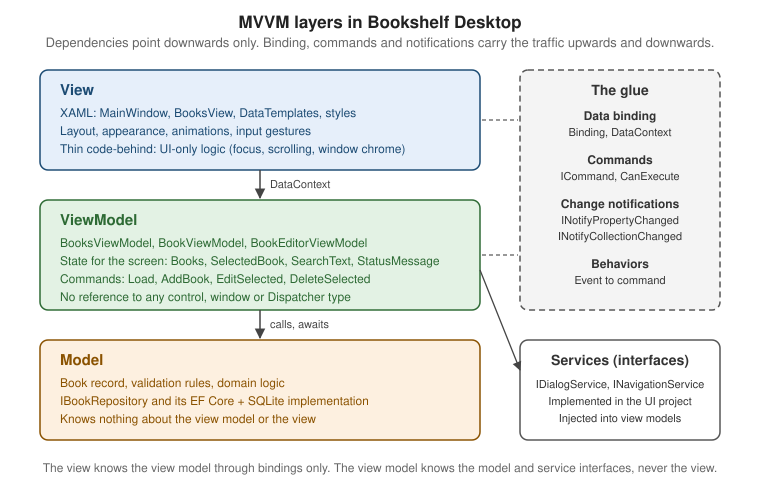

The MVVM Pattern
|
This content was generated with the assistance of AI and should be verified against the official documentation before being relied on in production. |
Model-View-ViewModel (MVVM) is the architectural pattern that XAML platforms were designed around. It splits a screen into three roles: a view that draws the user interface, a view model that holds the state and the actions of that interface, and a model that holds the application’s data and rules. The roles are connected by data binding, commands and change notifications instead of by code that reaches into controls. This page explains the pattern, the decisions you take when you apply it in a desktop app (how views get their view models, where event handlers go, what stays in code-behind) and when you should not use it. It was written against .NET 10 LTS (latest patch 10.0.13) with C# 14, Visual Studio 2026 18.11.1, Windows App SDK 2.5.1 and CommunityToolkit.Mvvm 8.4.2 on Windows 10 and Windows 11. .NET 11 is at release candidate 2 (11.0.0-rc.2) and general availability is expected at .NET Conf, 10 to 13 November 2026; MVVM is a design pattern and nothing in it depends on the runtime version. WPF is the stack in focus, and a comparison table with WinUI 3 and Windows Forms follows later.
The running scenario is Bookshelf Desktop, with a BooksViewModel, a BookViewModel, a BookEditorViewModel, an
IBookRepository, an IDialogService and an INavigationService. The pattern is shown here with the toolkit’s source
generators in the examples; the hand-written plumbing they replace is on MVVM from Scratch, the toolkit itself on MVVM Toolkit (CommunityToolkit.Mvvm), messages between view models on Messaging Between View Models, the container on
Dependency Injection and the Generic Host, navigation and dialog services on Navigation, Dialogs & Services in MVVM,
and testing on Testing View Models & UI. The binding engine that makes the pattern work is covered on Data Binding, and
commands on Commands.
Why a pattern at all
A new WPF or WinUI project starts with a window and a code-behind file. Typing a handler for each button’s Click event
is the quickest way to get a result, and it is how Windows Forms works. The cost arrives as the app grows. Microsoft’s
data binding guidance for Windows apps describes the symptom: handlers in files such as MainWindow.xaml.cs are tightly
coupled to the controls, they manipulate the UI directly, replacing a control means rewriting the handler, and the code-behind
files accumulate code that is not related to the UI, for example database access that is then duplicated for other
windows.
MVVM addresses this by moving everything that is not drawing into classes that do not know about controls. The benefits that Microsoft’s sources list are the same in the MAUI enterprise book and in the Windows data binding article:
| Benefit | What it means in a desktop app |
|---|---|
Testability |
A view model can be created in a unit test, its commands executed and its properties asserted, without starting a UI thread or showing a window. Both Microsoft sources name this as a primary benefit. |
Separation of concerns |
Data access, presentation logic and layout live in different classes, so a change to one is less likely to cause regressions in another. |
Replaceable UI |
The app can be redesigned in XAML without touching the view model, provided the view is implemented in XAML or in code that only reads the view model. A new version of the view works with the existing view model. |
Parallel work |
Designers can work on views and developers on view models and models at the same time, as long as they agree on the members the view model exposes. |
Reuse |
A view model that does not reference controls can be hosted by another UI (for example the WPF and the WinUI 3 versions of Bookshelf Desktop can share one view-model library). |
None of this is free. MVVM adds classes, indirection and a few rules, and the Windows data binding article says so plainly: it recommends MVVM for apps with complex data flows, multiple screens or team-developed code bases, and it says that code-behind is acceptable for simple single-page tools or prototypes, adopting MVVM incrementally as complexity grows. The section on when MVVM is overkill returns to this.
Source: Windows data binding and MVVM
The three roles
The pattern has three components and one rule about who may know whom. In the words of the MAUI enterprise book, the view knows about the view model and the view model knows about the model, but the model is unaware of the view model and the view model is unaware of the view. The view model therefore isolates the view from the model, and the model can evolve independently of the view.

Model
The model is the non-visual part of the application: the domain types, their validation and business rules, and the services or repositories that load and store them. The MAUI book describes model classes as non-visual classes that encapsulate the app’s data: DTOs, POCOs and generated entity and proxy objects, usually used together with services or repositories that encapsulate data access and caching. The Windows data binding article adds that the model layer is completely independent of the view and view-model layers and often resides partially in the cloud, which lets several client apps (a Windows App SDK app and a web app, say) work with the same underlying data.
In Bookshelf Desktop the model is the Book record and the IBookRepository abstraction, in a Bookshelf.Core library
that references neither WPF nor WinUI:
namespace Bookshelf.Core;
public sealed record Book(
int Id,
string Title,
string Author,
int Year = 0,
decimal Price = 0m,
string? Isbn = null);
public interface IBookRepository
{
Task<IReadOnlyList<Book>> GetAllAsync(CancellationToken cancellationToken);
Task<Book?> GetByIdAsync(int id, CancellationToken cancellationToken);
Task<Book> AddAsync(Book book, CancellationToken cancellationToken);
Task UpdateAsync(Book book, CancellationToken cancellationToken);
Task DeleteAsync(int id, CancellationToken cancellationToken);
}The Book record is immutable, which has a consequence for the view model: the UI cannot bind two-way to a record’s
properties. Editing therefore happens on a separate BookEditorViewModel that is created from a Book and produces a
new one; this design is used on the other MVVM pages as well. It is a modelling choice of this site’s sample, not a
requirement of MVVM, and the MAUI book explicitly allows the opposite: a view model may expose model classes directly if
they are designed to support data binding and change notification.
ViewModel
The view model is the model of the view. It exposes the data the screen needs in a form the screen can bind to, it exposes the actions the screen offers as commands, and it tells the view about changes. The MAUI book summarizes the split: the properties and commands that the view model provides define the functionality to be offered by the UI, but the view determines how that functionality is displayed. Four duties follow from that:
-
Expose state as properties. The view model also holds state that is relevant to the UI but not to the model, such as the selected item, the search text or whether an operation is pending. The Windows data binding article calls this out explicitly.
-
Expose actions as
ICommandmembers, and decide when each is available (CanExecute), so that the view never enables or disables controls in code. -
Adapt the model for display: combine two values into one, format a value, wrap an immutable record in an observable object. The book recommends putting this conversion in the view model, and using value converters in the view only for special formatting the view model does not provide.
-
Coordinate services: call the repository, ask the dialog service for a confirmation, request navigation. The view model is also the integration point with data access code.
A view model must also stay free of view types. The MAUI book states the rule as a tip: do not reference view types such
as Button and ListView from view models, so that they can be tested in isolation. In WPF this includes Window,
MessageBox, Dispatcher (use a service or await), Application.Current and FrameworkElement. The Bookshelf
BooksViewModel is built from the canonical shapes used across the section:
using System.Collections.ObjectModel;
using Bookshelf.Core;
using CommunityToolkit.Mvvm.ComponentModel;
using CommunityToolkit.Mvvm.Input;
namespace Bookshelf.Desktop.ViewModels;
public sealed partial class BookViewModel(Book book) : ObservableObject
{
public Book Model => book;
public int Id => book.Id;
public string Title => book.Title;
public string Author => book.Author;
public int Year => book.Year;
public decimal Price => book.Price;
[ObservableProperty]
public partial bool IsFavorite { get; set; }
}
public sealed partial class BooksViewModel(IBookRepository repository, IDialogService dialogs)
: ObservableObject
{
private IReadOnlyList<Book> _all = [];
public ObservableCollection<BookViewModel> Books { get; } = [];
[ObservableProperty]
[NotifyCanExecuteChangedFor(nameof(EditSelectedCommand))]
[NotifyCanExecuteChangedFor(nameof(DeleteSelectedCommand))]
public partial BookViewModel? SelectedBook { get; set; }
[ObservableProperty]
public partial string? SearchText { get; set; }
[ObservableProperty]
public partial string? StatusMessage { get; set; }
partial void OnSearchTextChanged(string? value) => ApplyFilter();
[RelayCommand(IncludeCancelCommand = true)]
private async Task LoadAsync(CancellationToken cancellationToken)
{
StatusMessage = "Loading books...";
_all = await repository.GetAllAsync(cancellationToken);
ApplyFilter();
StatusMessage = $"{_all.Count} books";
}
[RelayCommand]
private async Task AddBookAsync()
{
Book? created = await dialogs.EditBookAsync(null);
if (created is null)
{
return;
}
Book saved = await repository.AddAsync(created, CancellationToken.None);
_all = [.. _all, saved];
ApplyFilter();
}
[RelayCommand(CanExecute = nameof(HasSelection))]
private async Task EditSelectedAsync()
{
Book? edited = await dialogs.EditBookAsync(SelectedBook?.Model);
if (edited is null)
{
return;
}
await repository.UpdateAsync(edited, CancellationToken.None);
_all = [.. _all.Select(b => b.Id == edited.Id ? edited : b)];
ApplyFilter();
}
[RelayCommand(CanExecute = nameof(HasSelection))]
private async Task DeleteSelectedAsync()
{
if (SelectedBook is not { } selected
|| !await dialogs.ConfirmAsync("Delete book", $"Delete \"{selected.Title}\"?"))
{
return;
}
await repository.DeleteAsync(selected.Id, CancellationToken.None);
_all = [.. _all.Where(b => b.Id != selected.Id)];
ApplyFilter();
}
[RelayCommand]
private void ToggleFavorite(BookViewModel? book)
{
if (book is not null)
{
book.IsFavorite = !book.IsFavorite;
}
}
private bool HasSelection() => SelectedBook is not null;
private void ApplyFilter()
{
string text = SearchText?.Trim() ?? string.Empty;
IEnumerable<Book> matches = text.Length == 0
? _all
: _all.Where(b => b.Title.Contains(text, StringComparison.CurrentCultureIgnoreCase)
|| b.Author.Contains(text, StringComparison.CurrentCultureIgnoreCase));
Books.Clear();
foreach (Book book in matches)
{
Books.Add(new BookViewModel(book));
}
}
}Source: ObservableProperty attribute
Source: RelayCommand attribute
The class has no reference to a control. IDialogService is an interface defined in Bookshelf.Core (its
implementation shows a Window and lives in the UI project), which is why the view model can ask for a confirmation and
still be tested with a fake. The toolkit generates the INotifyPropertyChanged plumbing and the LoadCommand,
LoadCancelCommand, AddBookCommand, EditSelectedCommand, DeleteSelectedCommand and ToggleFavoriteCommand
members; the generator behaviour is explained on MVVM Toolkit (CommunityToolkit.Mvvm). The partial-property form
of [ObservableProperty] was added in CommunityToolkit.Mvvm 8.4.0 and needs the C# 14 compiler from Visual Studio 2026 or
the .NET 10 SDK. The Learn page for the attribute still documents field-based declarations, so the examples here follow the
8.4.x release notes.
View
The view defines the structure, layout and appearance of what the user sees. The MAUI book says ideally each view is
defined in XAML with limited code-behind that contains no business logic, and the Windows data binding article describes
the view layer as XAML with data binding expressions that connect UI components to view-model members. In WPF a view is a
Window, a Page, a UserControl, or a DataTemplate that renders a view-model type (the MAUI book notes that a data
template as a view has no code-behind and is designed to bind to a specific view model type).
The Bookshelf main view binds to the view model above. It declares no event handlers:
<UserControl x:Class="Bookshelf.Desktop.Views.BooksView"
xmlns="http://schemas.microsoft.com/winfx/2006/xaml/presentation"
xmlns:x="http://schemas.microsoft.com/winfx/2006/xaml"
xmlns:vm="clr-namespace:Bookshelf.Desktop.ViewModels"
xmlns:d="http://schemas.microsoft.com/expression/blend/2008"
xmlns:mc="http://schemas.openxmlformats.org/markup-compatibility/2006"
mc:Ignorable="d"
d:DataContext="{d:DesignInstance Type=vm:BooksViewModel}">
<DockPanel Margin="12">
<StackPanel DockPanel.Dock="Top" Orientation="Horizontal" Margin="0,0,0,8">
<TextBox Width="240"
Text="{Binding SearchText, UpdateSourceTrigger=PropertyChanged}" />
<Button Content="Add" Margin="8,0,0,0" Command="{Binding AddBookCommand}" />
<Button Content="Edit" Margin="8,0,0,0" Command="{Binding EditSelectedCommand}" />
<Button Content="Delete" Margin="8,0,0,0" Command="{Binding DeleteSelectedCommand}" />
</StackPanel>
<TextBlock DockPanel.Dock="Bottom" Margin="0,8,0,0" Text="{Binding StatusMessage}" />
<ListView ItemsSource="{Binding Books}" SelectedItem="{Binding SelectedBook}">
<ListView.View>
<GridView>
<GridViewColumn Header="Title" DisplayMemberBinding="{Binding Title}" />
<GridViewColumn Header="Author" DisplayMemberBinding="{Binding Author}" />
<GridViewColumn Header="Year" DisplayMemberBinding="{Binding Year}" />
</GridView>
</ListView.View>
</ListView>
</DockPanel>
</UserControl>Source: Data binding (WPF)
Nothing in this XAML tells the view model how to load, edit or delete. The Edit and Delete buttons are disabled
automatically when no row is selected, because the commands report CanExecute as false; no code ever calls
IsEnabled. The MAUI book gives the same advice as a tip: enable and disable elements by binding to view-model state,
not in code-behind. The d:DataContext line is a design-time hint for the Visual Studio XAML designer and for binding
tooling (it does not set the runtime DataContext); it needs the d and mc namespaces shown. Each binding is resolved
by the engine described on Data Binding: it reads DataContext from the element or the nearest ancestor that sets it.
The glue: binding, commands and notifications
MVVM is possible only because the platform offers three mechanisms that let two objects cooperate without knowing each other’s types. Each is a small interface or markup feature:
| Mechanism | What it does | Where you meet it |
|---|---|---|
Data binding |
Connects a target property of an element to a source property of the |
|
Change notification |
The source tells the binding engine that a value changed, so the UI refreshes. |
|
Commands |
An |
|
The next diagram shows how the interfaces relate to the Bookshelf classes. The toolkit’s ObservableObject implements
INotifyPropertyChanged, and the generated commands are RelayCommand and AsyncRelayCommand objects that implement
ICommand.
When a view-model property changes, the generated setter raises PropertyChanged; the binding engine, which subscribed
when the binding was created, reads the new value and updates the target. When a control invokes a command, the view model
code runs. The view never holds a reference to the view model’s type, only to an object assigned to DataContext, and
the view model never holds a reference to the view at all. That asymmetry is the pattern.
The notification rules the MAUI book lists apply to hand-written and generated view models alike. Always raise
PropertyChanged when a public property’s value changes and do not assume it can be skipped. Raise it for calculated
properties that depend on others. Raise it when the object is in a safe state, because handlers run synchronously. Never
raise it if the value did not change, which means comparing old and new values (the toolkit’s SetProperty and the
generated setters do this). Do not raise it from the constructor while initializing, because no binding has subscribed
yet. Raise it once per property per synchronous call.
Connecting a view to its view model
All approaches have the same aim, in the MAUI book’s words: the view must end up with a view model assigned to its
data context (BindingContext in MAUI, DataContext in WPF and WinUI 3). The book groups the approaches into two
families, which apply to WPF too even though the book describes MAUI.
View-first and ViewModel-first
| View-first | ViewModel-first | |
|---|---|---|
Conceptual model |
The app is composed of views, and each view connects to the view model it depends on. |
The app is composed of view models, and a service finds the view for a view model. |
Who creates whom |
The view (or the container that builds the view) creates or receives its view model. |
A view model (or a navigation service) is created first and a view is selected for it, usually by a |
Strengths |
View models do not depend on views, so apps are loosely coupled and testable. The structure of the app can be understood by following its visual structure. It matches platforms whose navigation constructs pages itself. |
View creation can be abstracted away. View models can create other view models. Navigation can be tested without any UI. |
Weaknesses |
The view needs a way to obtain dependencies. View-model-to-view-model navigation needs a mediator. |
The book calls it often complex, and it can be difficult to follow how parts are created and associated. |
Typical Bookshelf use |
The main window is constructed by the host and receives |
Navigation between |
The MAUI book says the choice between the two is a matter of preference and complexity, and it recommends view-first for
MAUI because it aligns with MAUI’s navigation system, which constructs pages itself. WPF has no such constraint: a
ContentControl plus implicit DataTemplates makes ViewModel-first natural, while Window instances are still
created view-first. Real WPF apps typically mix them: the main window is view-first (constructed by the host and given its
view model), and the content area inside it is ViewModel-first. The navigation service patterns are on Navigation, Dialogs & Services in MVVM; neither WPF nor the MVVM toolkit ships a ViewModel-first navigation API, so those are user
patterns.
DataContext assignment strategies
DataContext is an inheritable dependency property, so assigning it on the root of a view makes every descendant bind to
it unless a nearer element overrides it. There are several places to assign it:
| Strategy | How | Trade-offs |
|---|---|---|
Declarative in XAML |
|
Simple. Needs a public parameterless constructor, so it cannot receive the repository from a container. The MAUI book names this limitation. Fine for design-time data or tiny views. |
Code-behind, new |
|
Simple. The view must know how to obtain every dependency, which couples it to services. The MAUI book names this as the disadvantage. |
Constructor injection of the view model into the view |
The host’s container constructs the view and passes the view model: |
Keeps the view free of service knowledge and works with the Generic Host. The recommended default for this site’s examples. One line of code-behind per view. |
Implicit |
A |
No assignment code at all. Ideal for ViewModel-first navigation and for views nested in lists. Covered in the next section. |
ViewModel locator |
A resource or markup extension that resolves a view model for a view by convention, such as
|
Popular in older frameworks (MvvmLight shipped one). It is a third-party or user pattern; the MVVM toolkit has none and neither does WPF. It hides the container behind static state and is largely replaced by constructor injection. |
Bound from a parent |
A parent view model exposes a child view model property and the child view binds to it:
|
Natural for composite screens. Make sure the child is created by the parent’s container-resolved dependencies. |
The Bookshelf main window uses constructor injection. The Generic Host that builds it is on Dependency Injection & the Generic Host; here only the view side matters:
using Bookshelf.Desktop.ViewModels;
namespace Bookshelf.Desktop;
public partial class MainWindow : System.Windows.Window
{
public MainWindow(BooksViewModel viewModel)
{
InitializeComponent();
DataContext = viewModel;
Loaded += async (_, _) => await viewModel.LoadCommand.ExecuteAsync(null);
}
}The constructor assigns the data context and starts loading when the window is shown. Starting a command from Loaded is
acceptable code-behind: it is a UI lifecycle hook, and the actual work is in the view model. (An alternative with no
code-behind at all is a behavior; see below.) Note that LoadCommand is declared by the generator as IAsyncRelayCommand,
which is why ExecuteAsync is available here.
The WinUI 3 version of the same idea, from the Learn article, exposes the view model as a property of the page so that
{x:Bind} can compile against its type:
using Bookshelf.Desktop.ViewModels;
using Microsoft.UI.Xaml.Controls;
namespace Bookshelf.WinUI.Views;
public sealed partial class BooksPage : Page
{
public BooksViewModel ViewModel { get; }
public BooksPage()
{
ViewModel = App.GetService<BooksViewModel>();
InitializeComponent();
}
}App.GetService<T>() is a helper that the WinUI template guidance builds on top of Microsoft.Extensions.DependencyInjection;
it is not a framework API, and the Learn article points to its "Architecture patterns for WinUI 3 desktop apps" page for how
to define it.
Implicit DataTemplates as views
A DataTemplate with a DataType and no x:Key is applied automatically to any object of that type that WPF has to
display in a content presenter. That makes the template a view for the view model, with no code-behind and no
DataContext assignment, because the data context of a template’s content is the data object itself. The pattern is the
foundation of ViewModel-first composition in WPF:
<Window x:Class="Bookshelf.Desktop.MainWindow"
xmlns="http://schemas.microsoft.com/winfx/2006/xaml/presentation"
xmlns:x="http://schemas.microsoft.com/winfx/2006/xaml"
xmlns:vm="clr-namespace:Bookshelf.Desktop.ViewModels"
xmlns:views="clr-namespace:Bookshelf.Desktop.Views"
Title="Bookshelf Desktop" Width="900" Height="600">
<Window.Resources>
<DataTemplate DataType="{x:Type vm:BooksViewModel}">
<views:BooksView />
</DataTemplate>
<DataTemplate DataType="{x:Type vm:SettingsViewModel}">
<views:SettingsView />
</DataTemplate>
</Window.Resources>
<ContentControl Content="{Binding CurrentPage}" />
</Window>Source: Data templating overview (WPF)
When the main view model sets CurrentPage to a BooksViewModel, WPF finds the template whose DataType matches and
instantiates BooksView, whose DataContext becomes the view model. Setting it to a SettingsViewModel swaps the view.
SettingsViewModel and the shell view model that owns CurrentPage are defined on Navigation, Dialogs & Services in MVVM. Details of DataType, template lookup, selectors and ItemTemplate are on Converters, Collection Views & Data Templates.
The WPF features that make this work are not available everywhere. WinUI 3 does not resolve a DataTemplate implicitly
from DataType in the same way (the property exists for x:Bind typing, not for automatic lookup), and WinForms has no
templates. In WinUI 3, ViewModel-first navigation is usually built with a Frame, a navigation service that maps view-model
types to page types, or a ContentControl with a DataTemplateSelector. The exact support for implicit data templates in
WinUI 3 is not described in one place in the official documentation, so check your Windows App SDK version if you rely on
it.
Events and the view model: behaviors and commands
Controls that expose a Command property (Button, MenuItem, Hyperlink, KeyBinding) bind straight to an
ICommand. Many events have no command: MouseDoubleClick on a ListView, Loaded on a window, SelectionChanged,
TextChanged, Drop, Closing. The pattern gives three options, in this order of preference:
-
Bind to a state property that captures the intent (bind
SelectedItemand react in the view model). -
Attach a behavior that listens to the event and invokes a command.
-
Handle the event in code-behind when it is purely a UI concern, and forward to the view model if needed.
The MAUI book describes the second approach in general terms: behaviors allow controls to be declaratively connected to a
command, can be used with a range of events, and can associate command objects or methods with controls that were not
designed for commands; in the book’s words this moves event-handling code to view models, where it can be unit tested.
For MAUI the book uses EventToCommandBehavior from the .NET MAUI Community Toolkit.
XAML Behaviors for WPF
WPF has no built-in event-to-command facility. The ecosystem answer is the Microsoft.Xaml.Behaviors.Wpf NuGet package,
built from the microsoft/XamlBehaviorsWpf repository. It is an open source
project (MIT license) hosted in the microsoft GitHub organization; its README says the project works with a committee of
Microsoft MVP leaders who guide it and evaluate pull requests. It is not part of .NET or of the Windows SDK and it is not
documented on Microsoft Learn, so treat it as a Microsoft open source library that you add as a package, not as a platform
feature. Its repository is the source for the trigger and action types used below; WinUI 3 uses a different library for the same idea (the XAML Behaviors SDK for UWP and WinUI, namespace
Microsoft.Xaml.Interactivity), which is not covered on this page.
<ListView ItemsSource="{Binding Books}"
SelectedItem="{Binding SelectedBook}"
xmlns:i="http://schemas.microsoft.com/xaml/behaviors">
<i:Interaction.Triggers>
<i:EventTrigger EventName="MouseDoubleClick">
<i:InvokeCommandAction Command="{Binding EditSelectedCommand}" />
</i:EventTrigger>
</i:Interaction.Triggers>
<ListView.View>
<GridView>
<GridViewColumn Header="Title" DisplayMemberBinding="{Binding Title}" />
<GridViewColumn Header="Author" DisplayMemberBinding="{Binding Author}" />
</GridView>
</ListView.View>
</ListView>A double click on a row now runs EditSelectedCommand. Because the selected row is already in SelectedBook, the
command needs no parameter. The same package provides InvokeCommandAction properties to forward the event arguments (for
instance to read which row was dropped); check the version you install for the exact property names, because the public
README does not document them. The XAML namespace
http://schemas.microsoft.com/xaml/behaviors shown above is the one the package defines.
A behavior is also a clean replacement for the Loaded handler in MainWindow above:
<i:Interaction.Triggers>
<i:EventTrigger EventName="Loaded">
<i:InvokeCommandAction Command="{Binding LoadCommand}" />
</i:EventTrigger>
</i:Interaction.Triggers>Choosing between the options:
| Option | Good for | Cost |
|---|---|---|
Command property binding |
Anything with a |
None. Use it whenever the control supports it. |
State property binding |
Selection, text, scroll position exposed as data, window state. |
One property per concern; the view model reacts in a property-changed hook. |
Behavior package ( |
Events without a command and no UI logic: double click, |
An extra dependency (not a framework feature), XAML noise, and the event arguments are not typed for the view model. |
Hand-written attached behavior |
A reusable UI-only reaction: focus a control, scroll to the selected item, select all on focus. |
You write and test it once; the view model remains unaware. |
Code-behind handler |
Pure UI work such as moving focus or showing a tooltip. |
The handler must contain no business logic. |
What belongs in code-behind
A frequent misunderstanding is that MVVM forbids code-behind. It does not. The Windows data binding article says that code-behind files can be part of the view layer to contain additional code needed to customize or manipulate the UI, or to extract data from event handler arguments before calling a view-model method that does the work. The MAUI book likewise allows UI logic in code-behind for visual behavior that is difficult to express in XAML, such as animations. The test is whether the code needs to know about business rules or can be unit tested without a UI.
| Code | Where | Why |
|---|---|---|
|
Code-behind |
Generated and plumbing code. Part of the view. |
Moving keyboard focus after a view appears, scrolling a list so the selected row is visible |
Code-behind |
Pure UI concern. The view model does not know what a scroll position is. |
Window chrome: dragging a borderless window, custom title bar buttons |
Code-behind |
Platform behavior of the shell. A custom control is better when reused. |
Drag-and-drop mechanics: read the |
Code-behind or behavior |
Depends on UI types. Pass the result (a file path, an item) to a command. |
Animation triggers that depend on layout |
XAML triggers or code-behind |
Visual only. |
Deciding whether a book can be deleted |
View model |
Business and presentation logic. Test it without a window. |
Showing a confirmation |
Service behind an interface |
Keeps |
Loading data, calling the repository |
View model |
Testable with a fake |
Enabling and disabling buttons |
View model plus binding |
Commands report availability, the view reflects it. |
Raising dialog results back to the caller |
View model or service |
Do not let the view set a result that the view model has to read back. |
A useful rule: if you can describe the code in terms of controls ("scroll the list", "focus the search box"), it is view
code; if you can describe it in terms of the domain ("delete the selected book if the user confirms"), it is view-model
code. When a handler needs the view model, it casts DataContext or, better, receives it through the constructor; when the
view model needs the view, introduce an interface (a service) instead of a reference, so the dependency stays pointed
downwards.
MVVM across the three Windows UI stacks
The pattern is identical in concept on every stack. What changes is how much of the glue the stack supplies:
| WPF | WinUI 3 | Windows Forms | |
|---|---|---|---|
Data binding |
|
|
|
Data context |
|
|
|
Change notification |
|
Same interfaces. |
Same interfaces plus |
Commands |
|
|
Command binding on controls such as |
ViewModel-first views |
Implicit |
|
No templates; create user controls manually. |
Toolkit support |
Full ( |
Full. |
Usable: the toolkit has no UI dependency; binding to it uses |
The Windows Forms row is a summary only; this page does not describe the Windows Forms binding API or the designer workflow. It is notable that the view-model class from earlier in this page would compile unchanged in all three stacks, because it depends on no UI type, which is the practical meaning of "portable view model".
MVVM compared with MVC and MVP, and with other platforms
MVVM belongs to the family of patterns that separate presentation from domain logic. The main difference between the members of the family is how the presentation logic talks to the screen:
| MVC | MVP | MVVM | |
|---|---|---|---|
Presentation logic lives in |
The controller, which interprets input and chooses the view. |
The presenter, which reads and writes the view through an interface. |
The view model, which exposes state and commands. |
View to logic |
The view sends events to the controller; the controller updates the model and selects a view. |
The view forwards events to the presenter, usually by calling it directly. |
The view binds to the view model; there is no call from the logic to the view. |
Logic to view |
The view observes the model, or the controller passes data on. |
The presenter calls methods on a view interface to set text, show lists and so on. |
The platform’s binding engine copies state to the view after a change notification. |
Test seam |
Controller with a fake view. |
Presenter with a mock view interface. |
View model with fake services; no view at all. |
Typical home |
Web frameworks, Cocoa, ASP.NET MVC. |
Windows Forms, Google Web Toolkit, older Android. |
WPF, WinUI, MAUI, Avalonia. |
MVVM trades the presenter’s explicit view interface for the framework’s binding engine. That is why it needs XAML-like
data binding and why it is awkward in Windows Forms, where the bridge is BindingSource and manual wiring. A presenter-style
approach is the pragmatic alternative there; it is not described further on this page.
The same idea exists, with different names and mechanisms, on the other platforms this site covers:
-
On Android, the recommended architecture keeps UI state in a
ViewModelthat exposes aStateFlowand uses unidirectional data flow with a sealed UI state; events flow down from the screen as method calls and state flows up. See Recommended App Architecture (UI, Domain and Data Layers). The view observes the state instead of binding to properties, so there is noICommand. -
On Apple platforms, SwiftUI’s observable model types and views that are a function of state play the view-model role, with the framework tracking dependencies. See App Architecture the Apple Way.
-
In Kotlin Multiplatform, the view model can be shared across Android, iOS and desktop clients as common code, which is the closest analogue to a portable Bookshelf view-model library. See Architecture, Shared ViewModels and State.
-
In the Google Web Toolkit, the pattern of the time was MVP: activities as presenters, views behind interfaces and places for navigation. See MVP, Activities & Places. It is the presenter family described in the table above.
The common ground is the same discipline: keep the state and the logic out of the UI toolkit’s types, make the data flow explicit, and test the logic without the UI. The differences are in the mechanism: WPF and WinUI use two-way binding with property-change notification, Android and Compose use unidirectional state, and GWT used explicit presenter calls.
When MVVM is overkill
MVVM is a means, not a goal. Microsoft’s Windows data binding article is direct about scale: use it for apps with complex data flows, multiple screens or team-developed code bases; for simple single-page tools or prototypes code-behind is acceptable, and MVVM can be adopted incrementally. The article also says you can get a lot of benefit just from understanding data binding and separating app logic into layers, using only what the platform provides and without an external framework. Signs that the pattern is more than you need:
-
A single window with a handful of controls and no logic worth testing: a utility, a launcher, a one-off migration tool.
-
A throwaway prototype or a demo, where the goal is to explore the UI.
-
A Windows Forms app whose forms are thin wrappers over a database and where the designer-based data binding is enough.
-
A custom control, where the control’s own properties and templates are the API (a view model would be an extra layer).
-
A team that is new to XAML and binding: start with data binding and code-behind and extract view models when you feel the pain.
Signs that it is worth it: several screens that share state; logic that has bugs and needs tests; a UI that must be
redesigned or ported to WinUI 3; multiple developers working on the same screens; or the need to unit test commands and
CanExecute rules. A reasonable path for Bookshelf Desktop is: code-behind for the first prototype; one view model with
an observable collection once the list needs search and selection; commands once buttons need enabling rules; services and
a host once dialogs and persistence appear.
Frameworks can also be overkill. The toolkit used in this section is small and mostly generates code, but the Windows data binding article warns that there is a cost to adopting any pattern or framework and the benefits are not always clear for small projects; adopt only the techniques that provide a clear benefit. Heavier frameworks such as Prism or ReactiveUI add region managers, modules or reactive types; they are third-party libraries and are not covered here.
What changed over time
| Era | Change that affects MVVM code |
|---|---|
WPF on .NET Framework 3.0 to 4.8 |
MVVM pattern defined around WPF’s binding. View models implement |
.NET Core 3.0 to .NET 5 |
WPF and WinForms move to .NET (Windows only). |
.NET 6 to .NET 8 |
Nullable annotations are enabled in new project templates; |
.NET 9 and .NET 10 |
C# 13 and C# 14. CommunityToolkit.Mvvm 8.4.0 adds |
.NET 11 (release candidate) |
No change to the binding or commanding model is listed in the WPF what’s-new page for RC1 at the time of writing; check the final release notes after general availability. |
Dated versions come from the project’s release notes and the .NET release pages; the official ObservableProperty page
has not been rewritten for partial properties, so rely on the release notes.
Source: CommunityToolkit/dotnet releases
Pitfalls
-
View model references to view types. A
MessageBox.Show,WindoworDispatchercall in a view model makes it untestable and ties it to WPF. Put the call behind an interface (IDialogService) and keep the implementation in the UI project. -
Using
Application.Currentor static service locators. They work but hide dependencies. Inject services through the constructor. -
Forgetting that
DataContextisobject. A wrong assignment is not a compile error; a binding to a missing member silently produces no value and logs a binding error in the Output window. Use thed:DataContextdesign-time hint, enable binding diagnostics and compile-time{x:Bind}where the stack supports it. -
Exposing implementations instead of interfaces. The MAUI book recommends exposing commands as
ICommandso the implementation can change. The toolkit’s generated members areIRelayCommandandIAsyncRelayCommand, which are fine because they derive fromICommandand addNotifyCanExecuteChangedandExecuteAsync. -
Raising notifications from the wrong thread. A background thread that changes a bound property or an
ObservableCollectioncan fail or silently skip updates. Await the work and update on the UI thread, or use the synchronization context; see Threading, the Dispatcher and Async. -
Replacing the collection instead of mutating it. Assigning a new
ObservableCollectionto a property needs a property-changed notification; mutating the existing one needs none. Pick one. The example above clears and refills the same collection, so theItemsSourcebinding never has to change. Clearing still removes the selected item, so the list resetsSelectedItem(and with itSelectedBook) tonull; restore the selection byIdafter the refill when it must survive a filter change. -
A
SelectedItemthat is a copy. If the list holdsBookViewModelwrappers andSelectedBookis rebuilt on every refresh, selection resets. Keep wrapper identity stable, or restore selection byIdafter a reload. -
Heavy logic in property setters. Setters run on every binding update, possibly per keystroke. Move heavy work to commands or debounce it (
Delayon the binding or a timer). -
Memory leaks through event handlers. A view model that subscribes to a long-lived service’s event stays alive as long as the service does. Unsubscribe, use weak events, or use the toolkit’s weak messenger; see Messaging Between View Models.
-
One giant view model. A
MainViewModelthat owns everything is code-behind in disguise. Split by screen and by responsibility, and compose view models. -
Putting
async voidevent handlers in the view to call the view model. Prefer commands (AsyncRelayCommandobserves exceptions and exposesIsRunning) or a behavior; an unhandled exception inasync voidtakes the application down. -
Third-party package versions.
Microsoft.Xaml.Behaviors.Wpfis a separate package with its own versioning; pin it, and check the project’s release notes when you upgrade the target framework. -
Security. View models often handle input that goes to storage. Validate in the model or view model, not in the view, and never put secrets in a
DataContextthat is shown in the binding diagnostics or serialized into logs.
What the official documentation does not provide
-
There is no Microsoft Learn article on MVVM specifically for WPF. The guidance is in the MAUI enterprise e-book, the Windows data binding and MVVM article (aimed at WinUI), and the MVVM Toolkit documentation. This page applies it to WPF.
-
WPF has no
{x:Bind}; WPF examples use{Binding}with aDataContext. -
There is no official ViewModel-first navigation API, dialog service or view-model locator in WPF or in CommunityToolkit.Mvvm. They are user patterns, shown here and on Navigation, Dialogs & Services in MVVM. The locator belonged to MvvmLight.
-
The XAML Behaviors package for WPF is documented only in its GitHub repository, not on Learn.
-
There is no official guidance for testing WPF view models; the MAUI book’s unit-testing chapter and the toolkit’s tests are the closest references. See Testing View Models & UI.
-
The MAUI book’s MVVM chapter was last updated in 2024 and describes MAUI’s
BindingContext, not WPF’sDataContext.
References
-
Model-View-ViewModel (Enterprise Application Patterns Using .NET MAUI)
-
Dependency injection (Enterprise Application Patterns Using .NET MAUI)
-
microsoft/XamlBehaviorsWpf (Microsoft open source library, third-party to the platform)
-
Data Binding for the binding engine behind the pattern
-
Commands for
ICommand, routed commands andCanExecute -
Converters, Collection Views & Data Templates for implicit templates
-
Validation for
INotifyDataErrorInfoin view models -
Dialogs & Navigation for windows and pages
-
Threading, the Dispatcher and Async for UI-thread rules
-
WPF Architecture and Application Model for the host application
-
Recommended App Architecture (UI, Domain and Data Layers) for the Android equivalent
-
App Architecture the Apple Way for the Apple equivalent
-
Architecture, Shared ViewModels and State for shared view models in KMP
-
MVP, Activities & Places for the presenter family